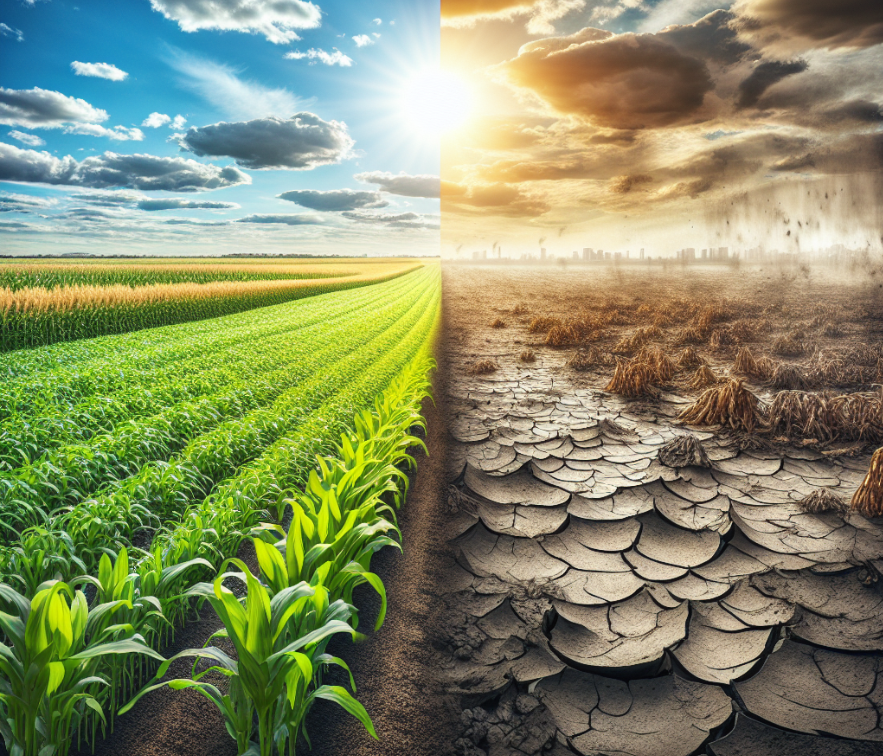

Soil is the foundation of agriculture, influencing crop health, yield, and sustainability. Farmers can enhance soil fertility through sustainable practices, ensuring long-term productivity.
At Farmonaut, we understand that the foundation of successful agriculture lies beneath our feet. The soil beneath us is not just dirt; it’s a complex, living ecosystem that plays a crucial role in supporting plant life and, by extension, all life on Earth. In this comprehensive blog post, we’ll delve deep into the soil and its importance, exploring why it’s so vital for agriculture and how we can protect and nurture this precious resource.
Light and drains quickly, but lacks nutrients. Used for root crops like carrots and potatoes.
Holds water well but can become compacted. Suitable for rice and other water-loving crops.
Ideal for most crops due to a balanced mix of sand, silt, and clay.
Farmers can enhance soil fertility by:
Composting involves decomposing organic materials such as kitchen scraps, farm residues, and plant matter into nutrient-rich humus. This process enriches the soil with essential nutrients like nitrogen, phosphorus, and potassium, while also improving soil structure and water retention. By recycling organic waste into compost, farmers can reduce dependency on chemical fertilizers and enhance soil fertility.
Planting cover crops, such as legumes, grasses, or clover, during off-season periods helps prevent soil erosion, suppress weeds, and enhance soil structure. These crops add organic matter to the soil when they decompose, improving fertility and promoting beneficial microbial activity. Additionally, legumes can fix atmospheric nitrogen, enriching the soil for subsequent crops.
Implementing crop rotation involves growing different types of crops consecutively on the same land. This practice prevents the depletion of specific nutrients, disrupts pest and disease cycles, and improves soil structure. For example, rotating deep-rooted and shallow-rooted plants can enhance nutrient utilization and reduce soil compaction.
Minimizing soil disturbance through reduced or no-till farming preserves soil structure, moisture, and organic matter. Excessive tillage can lead to soil erosion and degradation. By minimizing tillage, farmers can help preserve soil structure and fertility.
Green manuring involves growing specific crops, such as legumes or grasses, and then incorporating them into the soil while still green. This practice adds organic matter, enhances nutrient content, and improves soil structure. Green manures can also suppress weeds and reduce soil erosion.
Integrating trees and shrubs into farming systems, known as agroforestry, offers multiple benefits. Trees contribute organic matter through leaf litter, enhance nutrient cycling, and improve soil structure. Their root systems can prevent erosion, increase water infiltration, and provide habitats for beneficial organisms.
Using organic fertilizers, such as animal manures, compost, and various plant wastes, can help replenish soil nutrients and improve soil structure. It may be possible in some cases to substitute organic materials for commercial fertilizer, depending on the particular soil under consideration.
Applying a layer of organic material, like straw, leaves, or grass clippings, on the soil surface conserves moisture, regulates soil temperature, and suppresses weed growth. As mulch decomposes, it adds organic matter to the soil, enhancing fertility and promoting beneficial microbial activity.
Biofertilizers consist of living microorganisms that, when applied to seeds, plant surfaces, or soil, promote growth by increasing the availability of primary nutrients. Examples include rhizobium for nitrogen fixation and mycorrhizal fungi for enhancing nutrient and water uptake. Incorporating biofertilizers reduces the need for chemical fertilizers and supports sustainable farming practices.
Maintaining optimal soil pH is essential for nutrient availability and microbial activity. Regular soil testing can help farmers monitor pH levels and apply natural amendments, such as lime to raise pH or sulfur to lower it, ensuring a conducive environment for plant growth.
A: Soil is crucial in agriculture because it provides essential nutrients, water, and support for plant growth. It also hosts beneficial microorganisms, helps in climate regulation, and acts as a filter for water purification.
A: Signs of unhealthy soil include poor water infiltration, erosion, compaction, lack of organic matter, low biodiversity, and the presence of pests or diseases.
A: Farmers can improve soil health through practices like crop rotation, cover cropping, reduced tillage, adding organic matter, and implementing precision agriculture techniques for optimal resource use.
A: Technology, such as satellite-based monitoring systems and AI-powered advisory tools, helps farmers make data-driven decisions about soil management, leading to more efficient and sustainable practices.
A: Healthy soil can sequester significant amounts of carbon, helping to mitigate climate change. Sustainable soil management practices can enhance this carbon sequestration capacity.
A: Healthy soil with good structure and organic matter content can better retain water, reducing the need for irrigation and minimizing runoff and erosion.
A: Farmonaut provides satellite-based monitoring of soil conditions, AI-powered advisory services, and tools for tracking sustainability metrics, helping farmers implement effective soil management strategies.
Building healthier soil ensures sustainable farming and better harvests! 🌱🚜